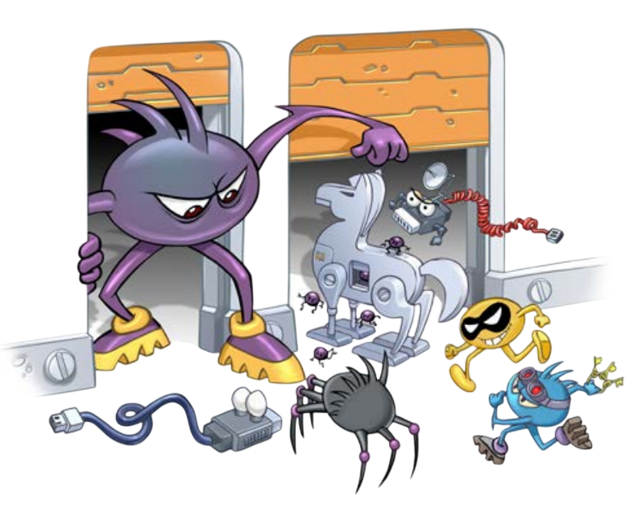
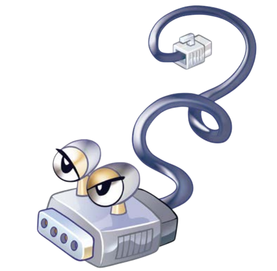
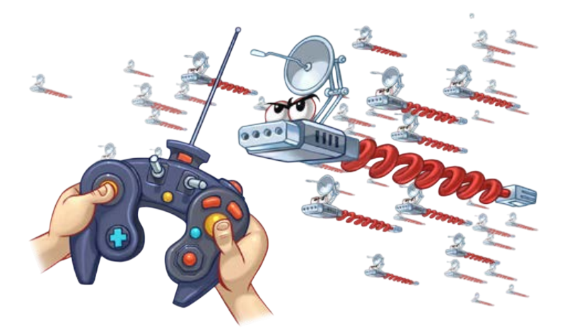
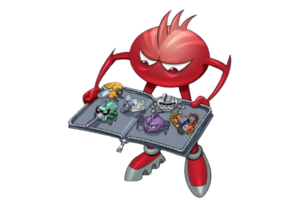

CONHEÇA OS PRINCIPAIS TIPOS
Códigos maliciosos são programas que executam ações danosas e atividades maliciosas. São muitas
vezes chamados genericamente de “vírus”, mas existem diversos tipos com características
próprias.
Conhecer estas características ajuda a identificar comportamentos estranhos no dispositivo e
entender as melhores formas de resolver. Também permite estimar o tipo de dano e como atuar,
pois
alguns furtam dados, outros cifram seus dispositivos e outros podem ser usados para fraudes.
Conheça aqui alguns dos principais tipos de códigos maliciosos.
Vírus
O vírus é um dos códigos maliciosos mais conhecidos, embora hoje em dia não seja o mais
comum, tanto que seu nome costuma ser usado erroneamente como sinônimo para qualquer tipo de
malware. A sua principal característica é que ele se torna parte de programas e arquivos
legítimos dentro do sistema. Para funcionar e se propagar, o vírus depende obrigatoriamente
da ação do usuário, espalhando-se ao enviar cópias de si mesmo por e-mails, mensagens ou
quando o usuário executa um arquivo hospedeiro que já estava infectado.

Ransomware
O ransomware é uma das ameaças mais perigosas da atualidade porque ataca diretamente a
disponibilidade dos dados do usuário. Após infectar o dispositivo, este código malicioso
bloqueia o acesso ao sistema ou sequestra os arquivos armazenados fazendo o uso de
criptografia complexa. Na sequência, ele exibe uma mensagem na tela exigindo o pagamento de
um resgate (geralmente cobrado em criptomoedas de difícil rastreio) para que o usuário possa
reaver suas informações e para evitar que os dados vazem na internet, estipulando prazos
rígidos e formas de contato com o atacante.

Spyware
O spyware é um tipo de código malicioso projetado especificamente para monitorar, coletar e
espionar de forma silenciosa todas as atividades executadas em um sistema, enviando essas
informações capturadas para terceiros sem que o dono do dispositivo perceba. Ele funciona
como uma categoria "mãe" que engloba outras ferramentas espiãs feitas para capturar dados.

Trojan (Cavalo de Tróia)
Inspirado na famosa história da mitologia grega, o Trojan digital funciona exatamente da
mesma maneira.
Ele se passa por um programa legítimo e útil, fazendo com que o usuário o instale por
vontade própria.
Porém, por trás dessa fachada inofensiva, ele executa funções maliciosas ocultas e sem o
conhecimento de quem o baixou.

Backdoor
O vírus é um dos códigos maliciosos mais conhecidos, embora hoje em dia não seja o mais
comum, tanto que seu nome costuma ser usado erroneamente como sinônimo para qualquer
tipo de
malware. A sua principal característica é que ele se torna parte de programas e arquivos
legítimos dentro do sistema. Para funcionar e se propagar, o vírus depende
obrigatoriamente
da ação do usuário, espalhando-se ao enviar cópias de si mesmo por e-mails, mensagens ou
quando o usuário executa um arquivo hospedeiro que já estava infectado.

Worm
O worm é um código malicioso altamente contagioso que se propaga de forma totalmente
automática pelas redes de computadores, sem precisar da ajuda de ninguém. Ao contrário
do vírus tradicional, o worm não precisa se embutir dentro de outros arquivos e não
necessita de um programa hospedeiro. Ele se espalha de dispositivo em dispositivo
explorando falhas e vulnerabilidades nos sistemas e aplicativos instalados. Como costuma
gerar uma quantidade massiva de cópias de si mesmo muito rápido, ele consome muitos
recursos e acaba derrubando ou deixando redes e computadores extremamente lentos.

Bot e Botnet
O bot (termo que vem de robot) é um malware muito parecido com o worm na forma de se
espalhar, mas ele possui um diferencial: conta com mecanismos que permitem a comunicação
direta com o invasor, fazendo com que o dispositivo seja controlado remotamente. O
computador infectado passa a ser chamado de "zumbi". Quando o atacante consegue infectar
milhares de dispositivos zumbis simultaneamente, ele cria uma Botnet (uma rede de
robôs). Essa rede poderosa é usada para potencializar crimes em larga escala, como
ataques de negação de serviço (DDoS) para derrubar sites, envio em massa de spam e
mineração de criptomoedas.

Rootkit
O rootkit é um conjunto avançado de programas e técnicas de programação que não serve
necessariamente para conseguir o acesso inicial a um sistema, mas sim para esconder e
assegurar a presença de um invasor ou de outros malwares dentro da máquina. O nome vem
de "root" (o administrador máximo em sistemas Unix/Linux) e "kit" (conjunto de
ferramentas). O grande perigo do rootkit é a sua capacidade de camuflagem: ele consegue
burlar os antivírus e esconder processos, arquivos e logs, fazendo com que a infecção
pareça invisível para o usuário do cotidiano.
